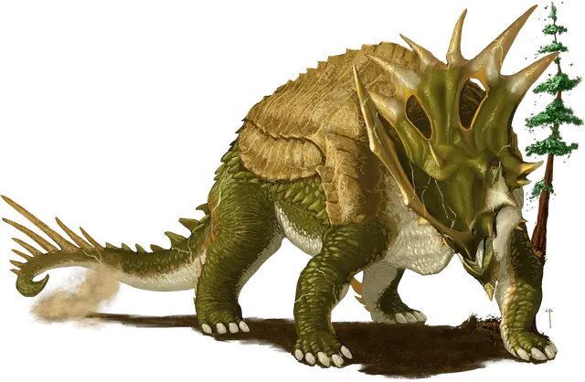

Цератопс
Ceratops
Громадный Монстр (Динозавр), без мировоззрения

Класс Доспеха 16 (природный доспех)
Хиты 139 (9к20 + 45)
Скорость 50 футов
| мод | спас | ||
|---|---|---|---|
| СИЛ | 24 | +7 | +7 |
| ЛОВ | 8 | −1 | −1 |
| ТЕЛ | 21 | +5 | +5 |
| мод | спас | ||
|---|---|---|---|
| ИНТ | 4 | −3 | −3 |
| МДР | 10 | +0 | +0 |
| ХАР | 7 | −2 | −2 |
Чувства пассивное Восприятие 10
Опасность 9 (5000 опыта)
Бонус мастерства +4
Особенности
Сопротивление магии. Цератопс совершает с преимуществом спасброски от заклинаний и прочих магических эффектов.
Действия
Мультиатака. Цератопс совершает одну атаку Боданием и одну атаку Топотом.
Бодание. . Рукопашная атака оружием: +11 к попаданию, досягаемость 10 футов, одна цель. Попадание: 29 (4к10 + 7) колющего урона. Если цератопс переместится как минимум на 20 футов по прямой к цели, то перед попаданием по ней атаки, цель дополнительно получает 11 (2к10) колющего урона; если целью является существо, оно также должно преуспеть в спасброске Силы Сл 19, иначе будет отброшено на расстояние до 20 футов от цератопса и упадёт ничком.
Топот. . Рукопашная атака оружием: +11 к попаданию, досягаемость 5 футов, одна цель. Попадание: 29 (4к10 + 7) дробящего урона.
Описание
Когда дети Аннама впервые начали заселять миры Материального плана, Всеотец создал гигантских динозавров, чтобы они жили бок о бок с ними в качестве компаньонов. Первобытная магия, использованная для создания динозавров, все еще пронизывает их существо и проявляется в красочных линиях, похожих на шрамы, на их огромных телах. Некоторые из этих древних динозавров сохранились в вечных джунглях, скрытых анклавах и других землях, нетронутых остальным миром.
Цератопс
Простирающийся более чем на 200 футов от кончика своего огромного носового рога до конца остроконечного хвоста, цератопс сверкает линиями яркой зеленой энергии на своей покрытой толстой чешуей шкуре. Один только его рог больше, чем большинство великанов, к тому же цератопс может сокрушать ногами древние леса, когда приходит в ярость.